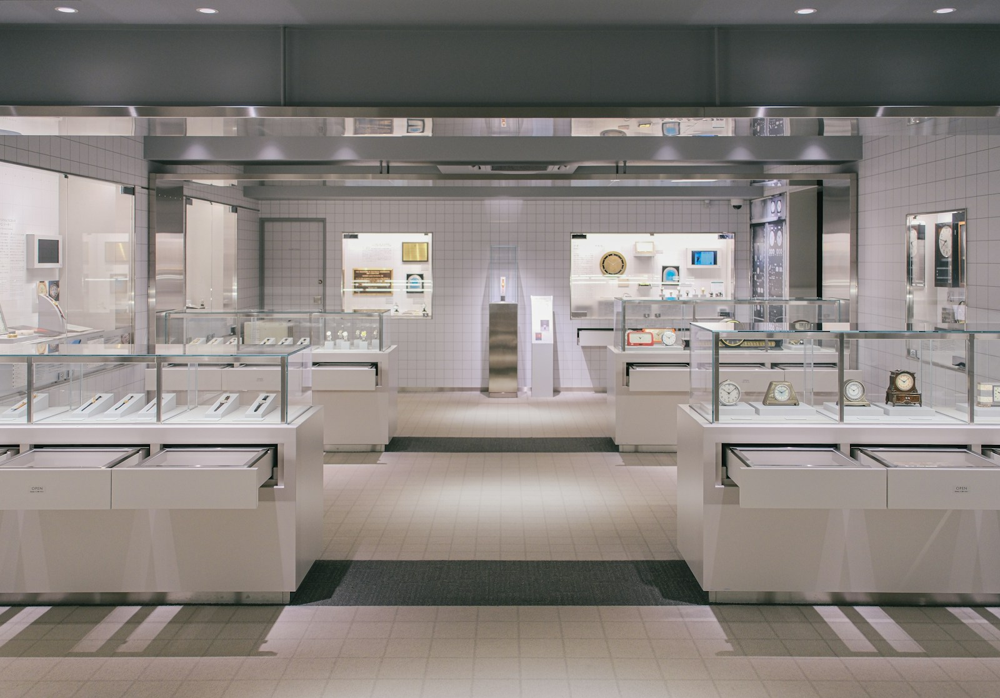
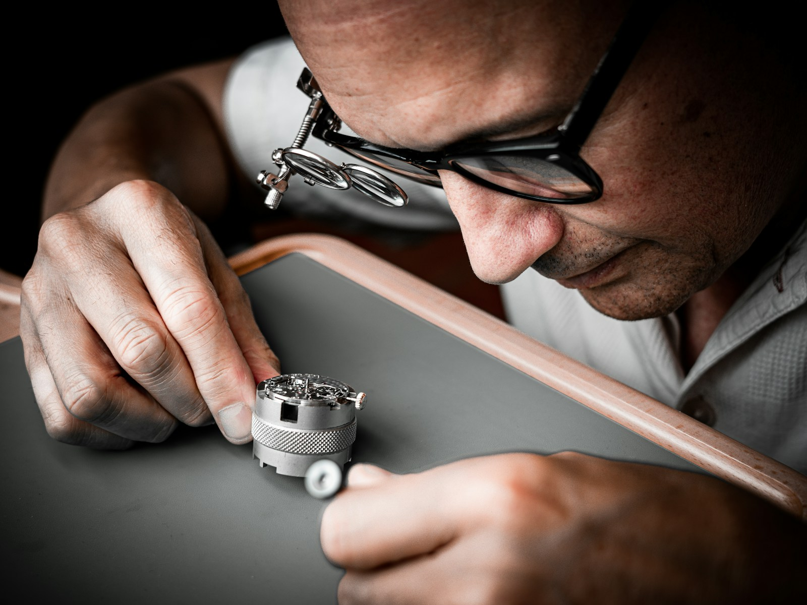
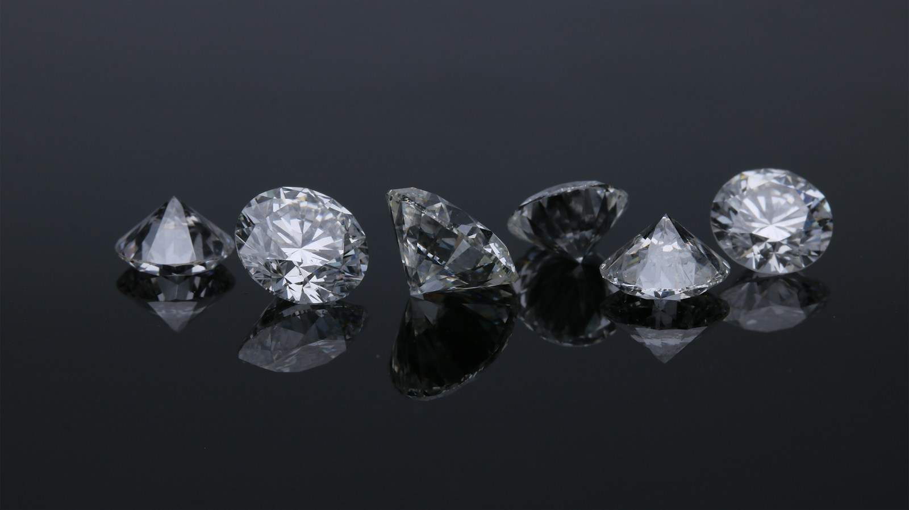
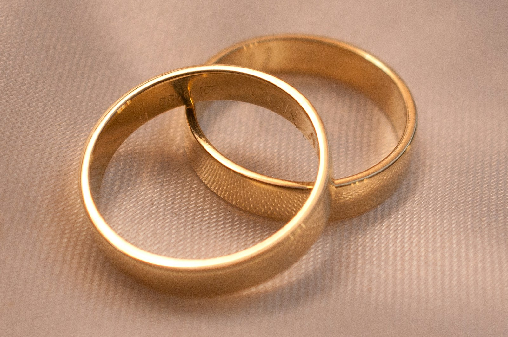
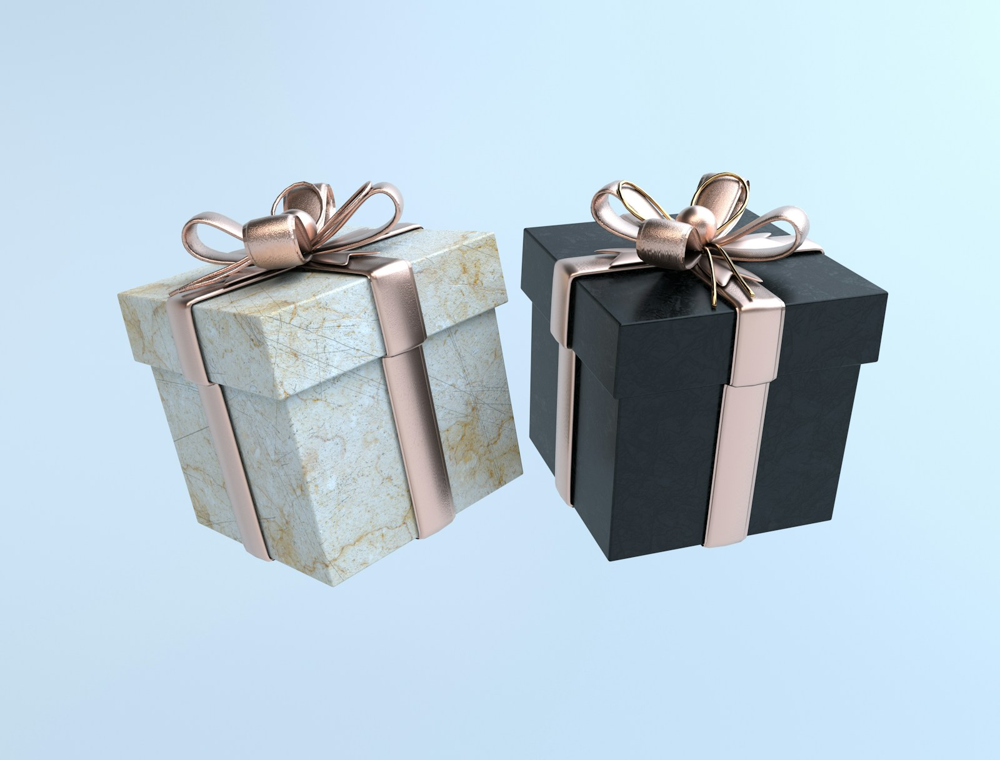

Mechanical Architecture
Open casebacks reveal gear trains, oscillating weights, and fine anglage—demonstrating why mechanical horology remains captivating decades after purchase.
VERONNE brings together contemporary mechanical and quartz timepieces alongside considered gold, diamond, and sterling-silver jewellery in a calm, unhurried salon setting.


Rather than overwhelming clients with crowded display cases, our selection focuses on enduring proportions, balanced wearability, and distinct finishing across four core pillars: Gold, Diamonds, Sterling Silver, and Wristwatches.
Every watch reference and jewellery silhouette is chosen for how it sits on the wrist, neck, or hand in daily life as well as formal occasions.
From brushed steel watch lugs to mirror-polished bezel chamfers and low-profile prong settings, lasting appeal resides in tactile detail.
Open casebacks reveal gear trains, oscillating weights, and fine anglage—demonstrating why mechanical horology remains captivating decades after purchase.
Sunburst, matte, and guilloché dial textures interact with applied indices and finely proportioned hands for effortless clarity in changing light.

Four-prong, bezel, and pavé mounts are engineered to maximize light return while keeping profiles smooth against everyday tailoring and knitwear.

Warm yellow gold, pale rose tones, white precious metals, and brushed sterling silver are paired to complement both solo wear and layered styling.

Whether selecting an engagement solitaire, pairing a dress watch with heirloom cufflinks, or choosing a milestone gift, trying pieces in person clarifies scale, weight, and tone immediately.